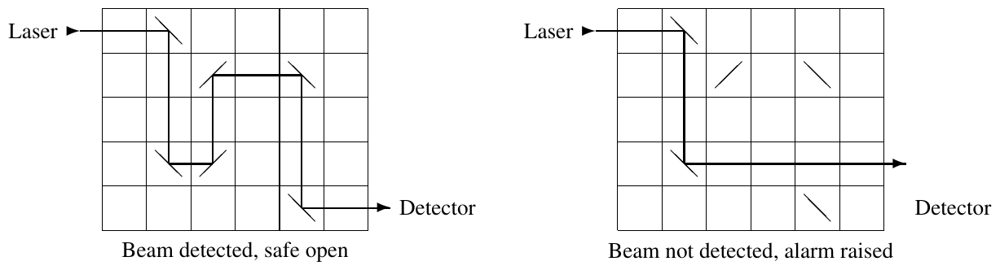

ACM-ICPC World Finals 2012 · Problem I
Safe Ltd. is a company that manufactures high-quality safes. Its latest invention is an optical closure mechanism that uses a laser beam passing through a rectangular grid with several mirrors.

When the laser is activated, a beam enters the top row of the grid horizontally from the left. The beam is reflected by every mirror that it hits. Each mirror has a 45 degree diagonal orientation, either / or \. If the beam exits the bottom row of the grid horizontally to the right, it is detected and the safe opens (see the left side of the figure above). Otherwise the safe remains closed and an alarm is raised.
Each safe has a missing mirror, which prevents the laser beam from traveling successfully through the grid (see the right side of the figure above). The safe has a mechanism that enables the user to drop a single mirror into any empty grid cell. A legitimate user knows the correct position and orientation of the missing mirror (/ in row 4 column 3 above) and can thus open the safe. Without this knowledge the user has to guess correctly, which can be difficult for safes with large grids.
Your job is to determine if particular safes are actually secure. A secure safe does not open right away without inserting a mirror, and there is at least one valid location and orientation for the missing mirror. There may indeed be multiple such locations and orientations.
Each test case describes a single safe and starts with a line containing four integer numbers r, c, m, and n (1 ≤ r, c ≤ 1 000 000 and 0 ≤ m, n ≤ 200 000). The mechanism’s grid has r rows and c columns.
Each of the next m lines contains two integer numbers ri and ci (1 ≤ ri ≤ r and 1 ≤ ci ≤ c) specifying that there is a / mirror in row ri column ci. The following n lines specify the positions of the \ mirrors in the same way. The m + n positions of the mirrors are pairwise distinct.
For each test case, display its case number followed by:
5 6 1 4 2 3 1 2 2 5 4 2 5 5 100 100 0 2 1 77 100 77 100 100 0 0
Case 1: 2 4 3 Case 2: 0 Case 3: impossible